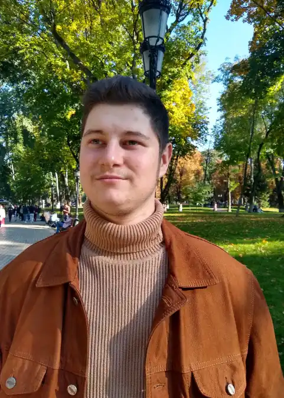
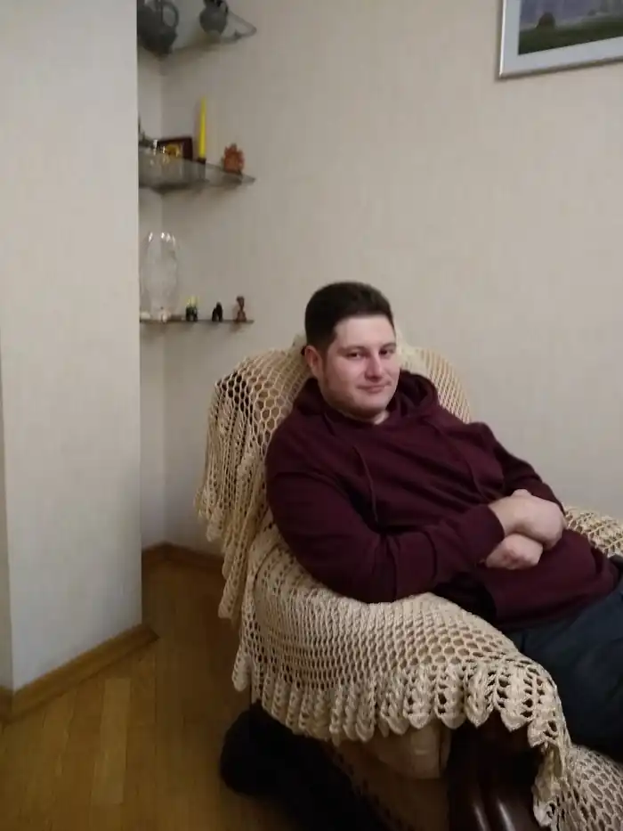
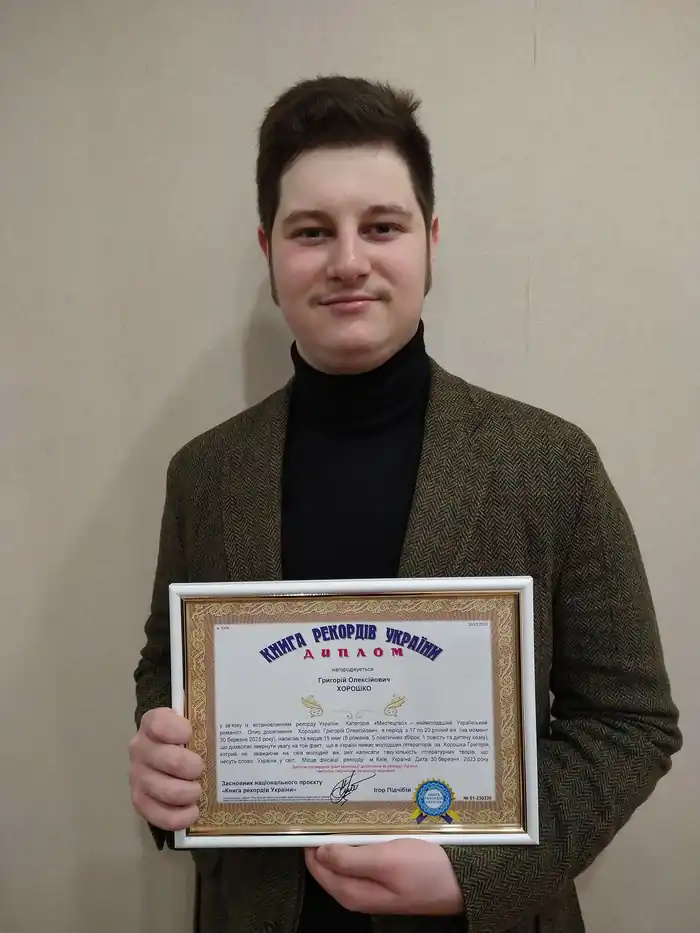

В незалежності від походження, раси чи фізіологічних особливостей, котрі стоять за кожною людиною, так чи інакше, але за всіма нами слідує певна історія. За кимось непримітна, за кимось визначна, а за більшістю проміжна, доволі звична та нейтральна, котра являє собою простоту буденності і звичність людського існування.
Так само життєва історія слідувала і за мною, як і за всіма іншими особами, та мені щиро хочеться вірити в те, що в ній буде ще чимало яскравих та по благому світлих сторінок, як написаних заздалегідь долею так і відредагованих моїми власними руками, як вже не раз траплялося до цього. Сам початок мого шляху, котрий взяв за точку і місце свого відліку Київ 15 березня 2003-го року, у українсько-грузинській родині, де продовжується і досі, я можу охарактеризувати виключною теплотою родинного та дружнього кола, період в котрий завжди приємно повертатися із напливом радісних та неймовірно приємних спогадів. Дитинство та юність людини – це саме ті окремі світи, які більше за все інше впливають на всю нашу життєву стежку і я не став виключенням. З перших же днів свого існування я ріс у оточенні доброти та любові, котрі слідували зі мною спільними тропами блага і чистоти на рівні з нескінченною епохою змін та глибоких реформацій, як рідної країни так і всього світу загалом. Так, наприклад, у п'ятирічному віці, в 2008-му році знаходячись у бабусі та дідуся в Грузії в чарівному місті Зугдіді, я вперше зустрівся із буттям війни… першими звуками вибухів… першим гулом сирени та реаліями суспільного страху, що глибоко вплинуло на все моє подальше сприйняття, яке можливо порівняти виключно із тими потрясіннями та переживаннями, котрі понівечили серце всієї нашої нації з початком повномасштабного вторгнення. Однак недарма кажуть, що життя завжди перемагає і так само, принаймні на певний строк, воно перемогло і в моєму житті. Я зміг гідно присвятити себе навчанню, вивчати мови, всім серцем полюбити історію, літературу та мистецтво, визріваючи як людина серед розуміння та ясності, в період триваючих змін, як у власному житті, так і в житті держави, загартовуючись чисельними життєвими вченнями. В той же самий час, в чотирнадцятирічному віці, серед чарівної зимньої ночі, в мені раз та назавжди пробудилася та любов, котра слідує за мною досі і я сподіваюсь, що прослідує за мною протягом всього життя — любов до письменництва… любов до створення… любов до того, що більше за тебе самого, адже воно є вічністю. Окрім цього, з настанням відповідного віку я прийняв рішення отримати освіту юриста, присвятивши свій час осягненню тонкощів права інтелектуальної власності, яке тісно переплітається з моїм істинним призванням і часто доволі гармонійно доповнює його. Література зайняла особливе місце в моєму житті, не просто його змінивши, а перетворившись на провідника серед пітьми невизначеності, допомігши пережити мені більшість доленосних перешкод в усі непрості часи і особливо у війну ставши для серця наче Божественним знаменням, котре допомогло та допомагає мені творити заради того, щоб ті хто прочитав мої роботи могли відволіктись від буденності, знайти прихисток для душі серед сторінок або ж заглибитись у літературний світ уявивши себе один із персонажів моїх книг. Власне, для цього нам і потрібна література: для того, щоб знаходити і, головне, створювати самих себе спочатку в уяві на сторінках книжок користуючись даром фантазії, щоб потім втілити ці мрії у реальність. В цьому мета будь-якого автора і, звичайно ж, моя власна – допомогти читачеві стати тим ким він бажає бути… стати тим кого ховає його душа в своїй чарівній глибині… стати краще, а це є ціннішим за всі золоті гори на світі, адже це є справжня велич.